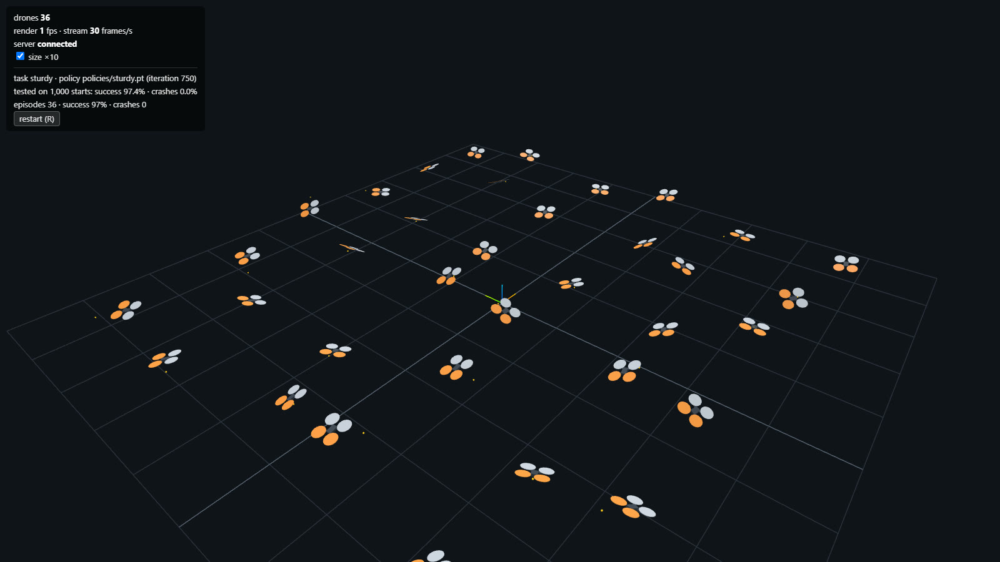
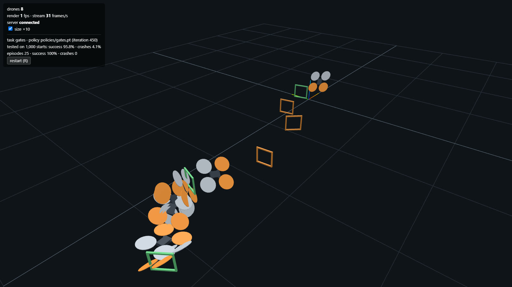
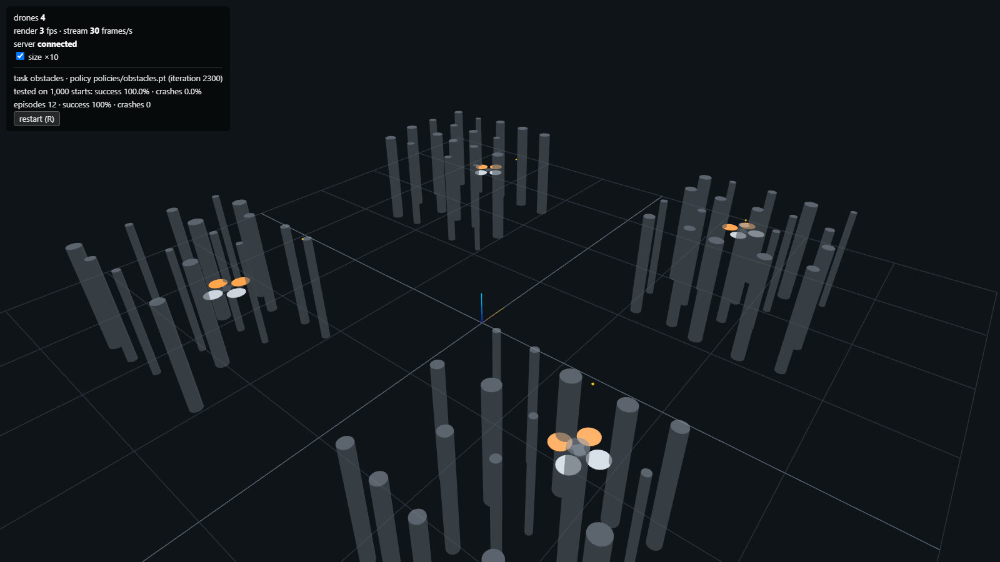
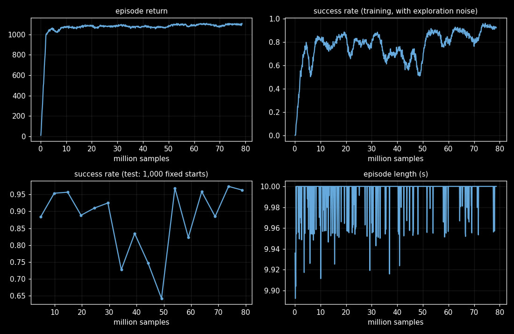
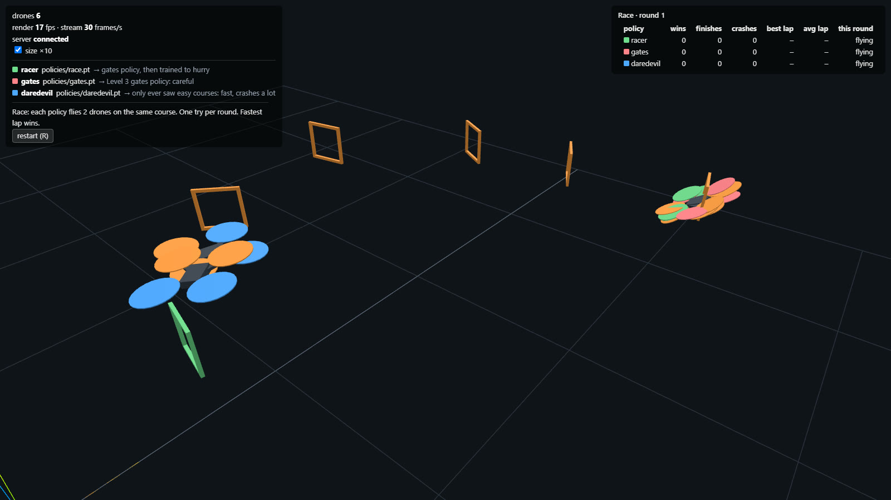
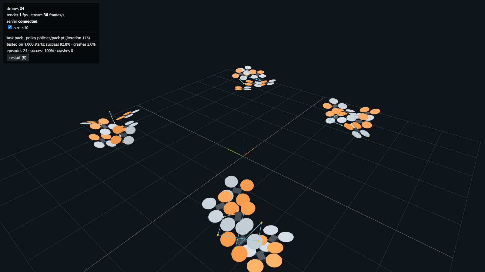
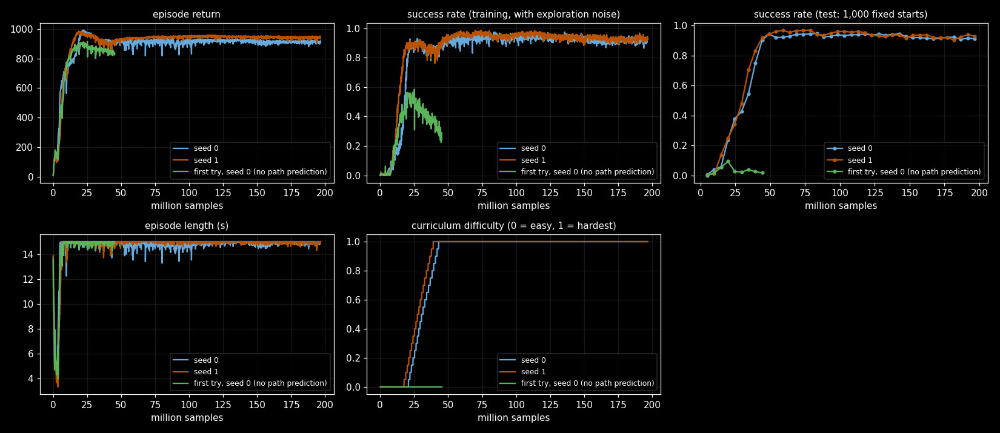

MindFlight
Thousands of simulated drones learning to fly at once, on the GPU, while you watch them live in your browser. I wrote the quadcopter physics myself, and the learning code is one file you can read top to bottom!

- Status
- All 7 levels done
- Physics
- My own, in PyTorch
- Learning
- PPO, one file
- Speed
- 567M drone-steps a second
- Drones at once
- 16,384
- Every score
- 1,000 fixed test flights
Why I wrote my own physics
Most people grab a simulator somebody else made. I wanted to know what every number in there was doing, so I wrote the quadcopter model myself in PyTorch, using the published numbers for a real drone (the Crazyflie 2.x). It weighs 27 grams and its props spin at 14,476 RPM just to hover.
Because the whole thing is tensors, the same code flies one drone or 16,384 of them at once. On my GPU that comes out to 567 million drone-steps every second!
The seven levels
I set it up like levels in a game. A level only counts as done when the trained brain passes a test: 1,000 fixed flights on the hardest setting. No lucky runs allowed.
- Hover. Hold 1 metre for 10 seconds from a random start. 100%, with 0 crashes.
- Fly to a point. 99.3% of targets reached within 10 cm.
- Gates. 95.8% finish all 6 gates in order, with 3.7 second laps.
- Obstacles. 100% cross the densest pillar field, steering by lidar.
- Sturdy. 97.4% in gusty wind on drones that are never the same weight twice.
- Race. Three brains on one course. The racer won 96 of 100 rounds.


Then I added air
Here’s a fun one. Up to level 4 the drones were flying in a vacuum (oops). Level 5 adds air: drag on the rotors, gusts of wind, and the extra lift you get near the floor. Then every drone gets a slightly different weight, up to 20% either way.
So does that actually matter? The brain I trained in still air on one perfect drone only reached 84.6% of its targets out here. The one trained in the mess reached 97.4%, with zero crashes. In double the wind it’s 77.8% against 56.0%.

The race
Three brains fly the same course at the same time. One is careful, and one is a daredevil that only ever saw easy courses, so it’s fast and crashes a LOT. The racer started out as the careful one, and then I trained it to hurry. It won 96 of 100 rounds, with 3.36 second laps against 3.68.

Toward a real drone
The goal is a brain trained here flying a real drone. So the newer brains don’t get perfect information any more. They get noisy, late sensor readings, a slightly different drone every time, and they send the same commands a real radio link would carry.
One brain flies a whole pack of 6 drones that share the air (they can crash into each other, and a drone above pushes the one below down). Another one guards a person: someone throws foam balls and the drone has to touch each one before it gets there. It catches 93.7% of throws at 8 to 15 metres a second.
My first try at that one failed badly, and the plot below shows it. The green line is the brain with no idea where the ball was going. Giving it a prediction of the ball’s path is what fixed it.


Where it is now
All seven levels are done, and so are the pieces for real hardware. There’s even a fake drone that looks exactly like the real one to my code, so the whole mission (takeoff, waypoints, landing) gets tested before any hardware shows up. I haven’t flown a real one yet. That’s next!